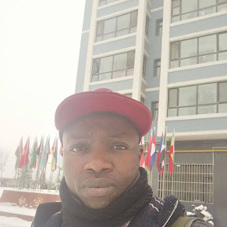

About Me
I’m Nehikhare Efehi, I live in Benin City, Nigeria. I am an Educationist, Mentor, and a Project Manager with over four (4) years of experience in leveraging technology to solve real-world problems. My passions are technology and education, which drive me to create innovative solutions and empower others through knowledge sharing. I am learning to become a full-stack developer in web development, with a focus on building user-friendly and accessible applications that make learning Tech, Maths and Logic easy for kids and young adults. Beyond coding, I enjoy mentoring young developers, exploring new tech trends, and contributing to open-source projects. I'm happily married and a proud father of two, and I find great joy in balancing my professional pursuits with family life. I am also a Bishop in my local ward. In my free time, I love reading about emerging technologies, traveling to experience new cultures, and giving back to my community through educational initiatives.
Benin City, Nigeria
Benin City, the capital of Edo State in southern Nigeria, is a historic city known for its rich cultural heritage. It was the heart of the ancient Benin Kingdom, famous for its bronze plaques and sculptures. The city blends tradition with modernity, featuring bustling markets, the Oba’s Palace, and a vibrant arts scene. Its walls, once among the world's largest man-made structures, reflect its storied past. 🚀
Official Flag of Nigeria
Web Dev Resources
Here are some of my favorite web development resources: